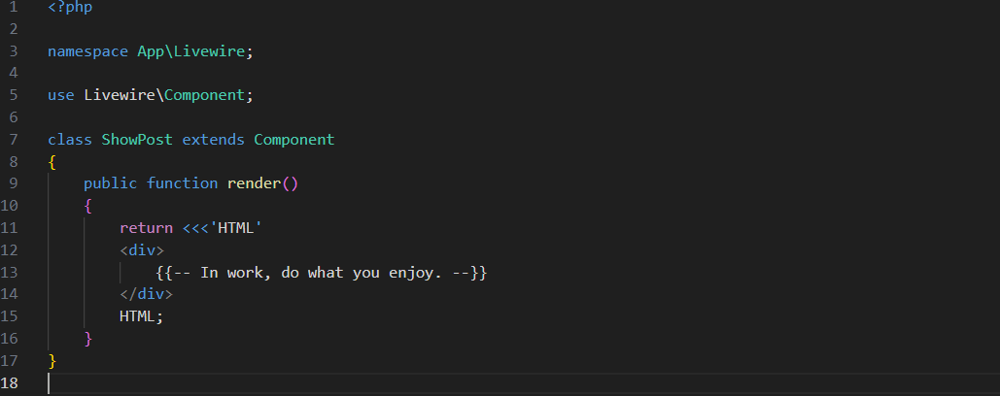
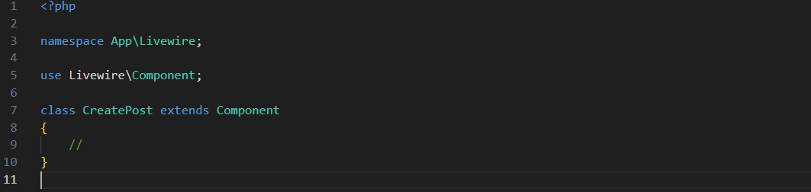

Un componente Livewire es es una simple clase PHP que extiende Livewire\Component. Puedes crear archivos de componentes a mano, o usar el comando:
php artisan make:livewire ComponentName
O si prefieres kebab case:
php artisan make:livewire component-name
Al correr el comando, Livewire creará dos nuevos archivos en tu aplicación. El primero será la clase del componente: app/Livewire/ComponentName.php
El segundo será la vista Blade del componente: resources/views/livewire/component-name.php
Puedes usar la sintaxis de namespaces o de puntos para crear los componentes en directorios anidados.
php artisan make:livewire Directory\\ComponentName
php artisan make:livewire diretory.component-name
Si tu componente es bastante pequeño, es posible que prefieras crear un componente en linea. Los componentes en linea son componentes Livewire de un solo archivo cuya plantilla de vista está contenida directamente en el método render() en lugar de un archivo separado:
Puedes crearlos agregando el indicador --inline al comando make:livewire
php artisan make:livewire ComponentName --inline
Para reducir el texto repetitivo en tus componentes, puedes omitir completamente el método reder() y Livewire usará su propio método render() subyacente, que devuelve una vista con el nombre convencional correspondiente al componente:
Puede personalizar los archivos (o talones {stubs}) que utiliza Livewire para generar nuevos componentes ejecutando el siguiente comando:
php artisan livewire:stubs
Esto creará cuatro nuevos archivos en tu aplicación:
stubs/livewire.stub — used for generating new components
stubs/livewire.inline.stub — used for generating inline components
stubs/livewire.test.stub — used for generating test files
stubs/livewire.view.stub — used for generating component views
Aunque estos archivos se encuentran en tu aplicación, aún puedes usar el comando Artisan make:livewire y Livewire usará automáticamente tus talones personalizados al generar archivos.